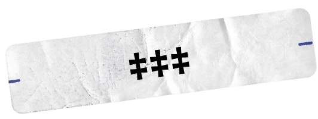
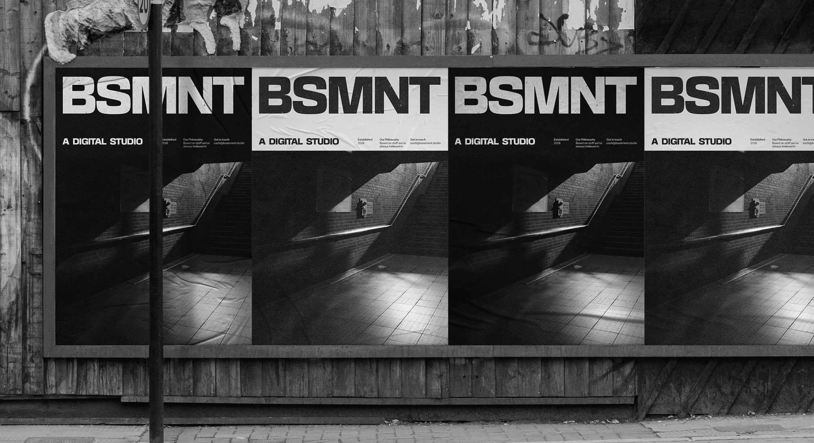
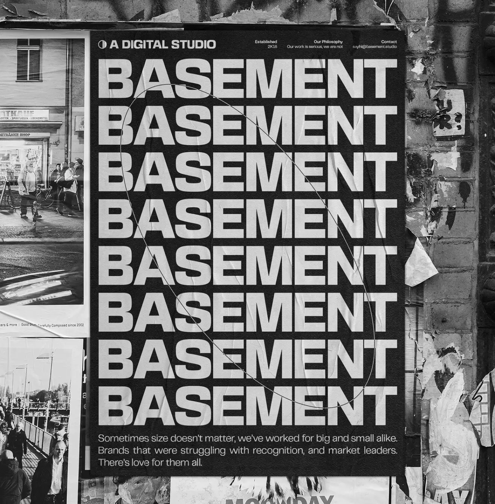

BASEMENT
GROTESQUE

Basement Grotesque is the studio’s first venture into the daunting but exciting world of type design. Of course, we had to start with a heavyweight: striking and unapologetically so; flawed but charming and full of character.
We set out inspired by the expressiveness of early 19th-century grotesque typefaces and the boldness and striking visuals of the contemporary revival of brutalist aesthetics. Grotesque is the first step in a very ambitious path we’ve set for ourselves.
The typeface is a work in progress, open to anyone who shares our visual and graphic sensibilities. You're invited to check our journey as we iterate, change, and add new weights and widths in the future as we learn by doing.
***
ABCDEFGHIJKLMNOPQRSTUVWXYZ
abcdefghijklmnopqrstuvwxyz
0123456789!?&
CHARACTERS
413 GLYPHS
BLACK (800)
OTF
†
LËTZEBUERG
MOSCOW
GENÈVE
ROMA
‡
CATACOMBS, ALTHOUGH MOST NOTABLE AS UNDERGROUND PASSAGEWAYS AND CEMETERIES, ALSO HOUSE MANY DECORATIONS.
There are thousands of decorations in the centuries-old catacombs of Rome, catacombs of Paris, and other known and unknown catacombs, some of which include inscriptions, paintings, statues, ornaments, and other items placed in the graves over the years.
OBVIOUSLY
aàáâä
aàáâä
aàáâä
BECAUSE, WHY NOT?
RRRR
GG
1918-2021
£ 206.10
€ 37,00
WHO NEEDS NUMBERS?TRY THIS BEAUTY:)
HANDCRAFTED
FOR STRING DESIGNS


FORGET MORALITY
Moral philosophy is bogus,
a mere substitute for God that licenses
ugly emotions.
I002.s5
I001.s5
I004.s5
In every Mithraeum the centerpiece was a representation of Mithras killing a sacred bull, an act called the Tauroctony.
I003.s5

2K21
I005.s5

VERSION HISTORY
1.2
Refined shapes for certain glyphs. Adjusted kerning and addition of more variants and ligatures.
24 Sep 20211.1
Refined and redrawn shapes. Masters set up for additional weights and widths. Renaming from Bold to Black to comply with the new weight spectrum.
08 Aug 20211.0
Private release. Bold weight, full set of glyphs with support for most Latin languages, full set of punctuation and symbols.
28 May 20210.9
Capital letters, alternative glyphs, stylistic sets, regular and discretionary ligatures, lining and old-style figures.
24 May 20210.5
Lowercase and some capital letters.
17 Apr 2021FEATURES STATUS
TWEETS
I'm downloading the #basementgrotesque typeface, the boldest font I'll ever use on my side-projects. Thank you guys @basementstudio 🖥 Get it now: https://t.co/vVVYlfqMzw
05:47 am · 29 Mar 2026